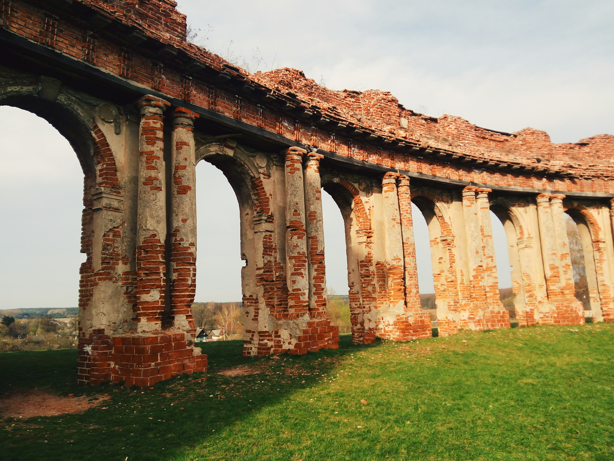

Теговое облако Ружан: Огромный замок, розочки, желто-розовое (мороженное и закат), умилительный Сапега, тишина, птички, ку-ка-реку, много резьбы, дискотека-2р., ров, нестрашные собаки, ружанская медленная корова, минибар (выбиты окна), разноцветные домики, парни-экскурсоводы, компания слева, простота, поле, кладбище на горе, размах, Урбанович, кассирша на вокзале: «вы не уедете», неудачный автостоп, парень с бутылкой, добрый дяденька, железнодорожный чай с ромовыми звездочками. ⠀
Ruzhan
